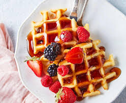

Classic Waffles

Ingredients
- 2 cups all-purpose flour
- 1 teaspoon salt or to taste
- 4 teaspoons baking powder
- 2 tablespoons white sugar
- 2 large eggs
- 1 ½ cups warm milk
- ⅓ cup butter, melted
- 1 teaspoon vanilla extract
Instructions
- Mix flour, salt, baking powder, and sugar together in a large bowl; set aside. Preheat waffle iron to desired temperature.
- Beat eggs in a separate bowl; stir in milk, butter, and vanilla.
- Pour milk mixture into flour mixture; beat until blended.
- Ladle batter into a preheated waffle iron.
- Cook waffles until golden and crisp.
- Serve immediately and enjoy!
Homepage